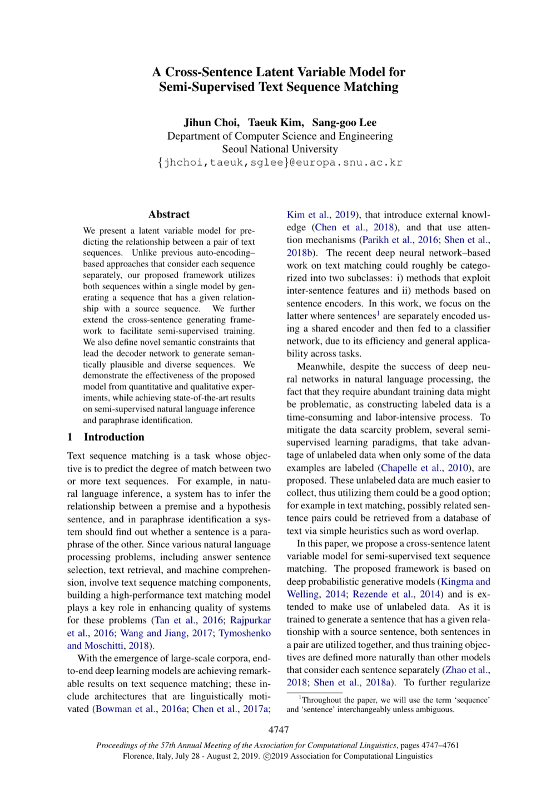

A Cross-Sentence Latent Variable Model for Semi-Supervised Text Sequence Matching
ACL 2019
Jihun Choi, Taeuk Kim, Sang-goo Lee
One-Line Summary
Semi-supervised text sequence matching using a cross-sentence latent variable model

Figure 1. A cross-sentence latent variable model for semi-supervised text sequence matching, capturing inter-sentence dependencies through latent representations.
Key Points
Improves matching performance in semi-supervised settings by modeling inter-sentence relationships through latent variables
Presents a framework that effectively leverages small amounts of labeled data together with large amounts of unlabeled data